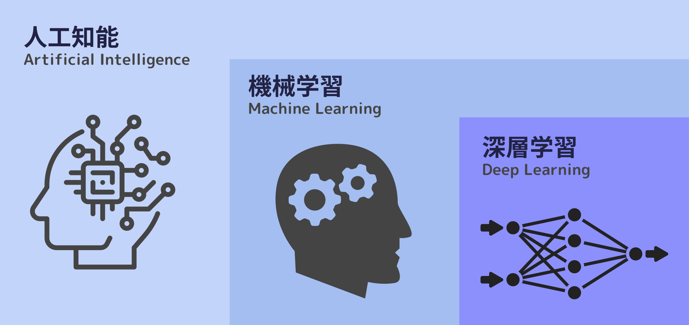

WHAT is AI?
そもそも”AI”とは

近年、AI技術は急速に発展しており、我々にとっても身近なものになりつつあります。しかし、”AI”
という言葉は知っていても、一体それが何なのか、どういうことに活用できるのかなど、詳しいことを知っている人は少ないでしょう。このサイトでは、そうしたAIについての知識や、上手な活用方法を解説していきます。
AIとは、”Artificial
Intelligence”（人工知能）の略語です。Wikipediaによれば、『計算（computation）』という概念と『コンピュータ（computer）』という道具を用いて『知能』を研究する計算機科学（computer
science）の一分野
※1 を指す語とされています。
とても簡単に表現すると、AIとは、人間の知能をコンピュータによって再現する技術のことです。
AIはどのように動いているのか
人間は、外からの情報を脳内で処理して場面に応じた判断や思考をしていますが、AIではこれらの仕組みがコンピュータ上で再現されています。AIのプログラム上で、人間と同じように入力された情報を処理し、思考しているように見せかけているというわけです。
例えば、ロボット掃除機に搭載されているAIは、センサの情報から障害物をうまく回避したり、部屋の間取りを学習して最適なルートを計算したりしています。
情報処理の段階でとても重要になってくるのが、「学習」です。人間と同じように、AIもその情報に対する知識・経験がなければ、適切な判断ができません。では、どのような方法でAIに「学習」をさせるのでしょうか。
機械学習とディープラーニング

チーム制作
AIの学習方法の一つに、「機械学習」というものがあります。これは、トレーニングを行うことによってデータの背景にあるルール、もしくはパターンを発見し、タスクを実行できるようにする学習方法です。ここでタスクとは、AIが解決すべき問題のことです。例えば画像認識AIであれば、写真に何が写っているかを推測するといったものです。
そして、機械学習の中でもより人間の脳に近い形で学習させる方法が、「ディープラーニング（深層学習）」と呼ばれる手法です。ディープ（深い）とは、情報処理をする階層が多い（=深い）という意味で、単純な入出力の階層以外に中間層を設け、かつ中間層を多層化します。こうすることで情報の複雑さに対応できるようになり、データの分析精度が向上します。ディープラーニングにより、これまでのAIでは対応できなかったような複雑かつ膨大なデータを扱うことができるようになりました。
※1: 人工知能 - Wikipedia